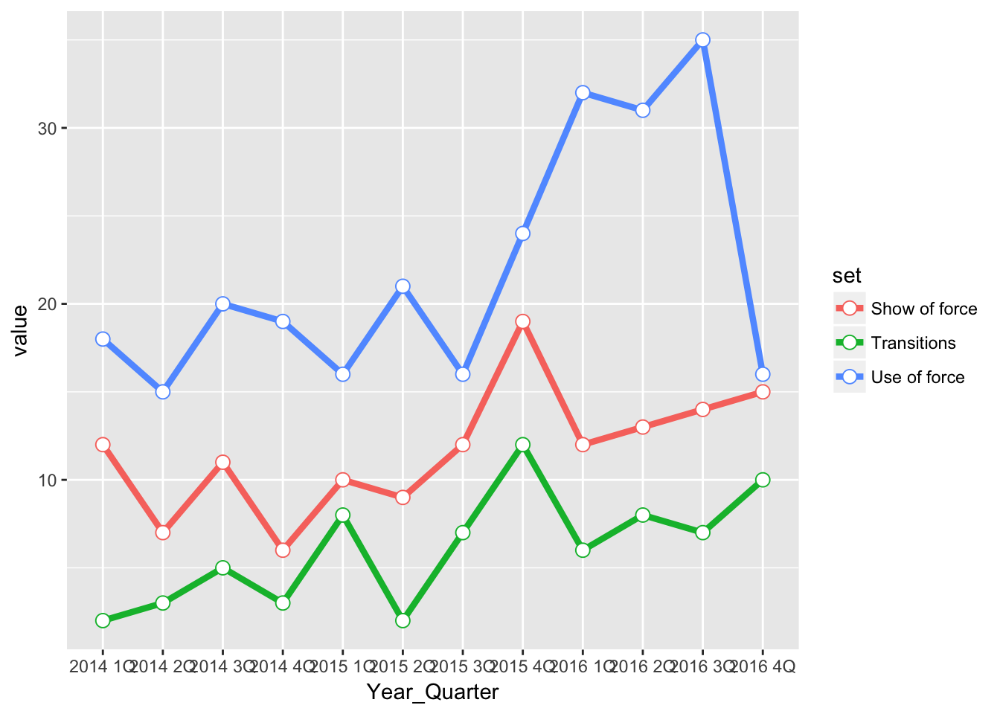
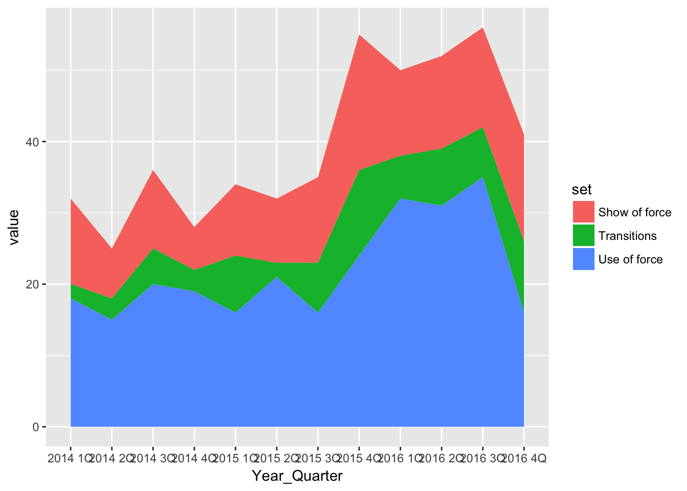
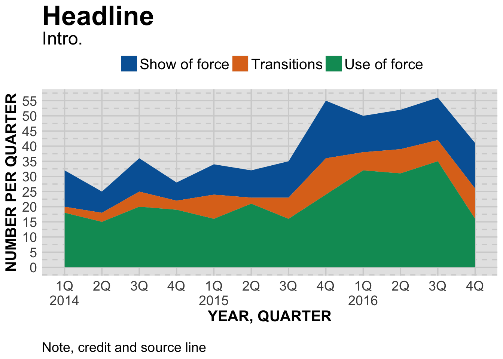

An area plot is kind of the line chart version of stacked bar charts.
Let’s look at our chart again.
# load the libraries
library(readr)
library(ggplot2)
library(ggthemes)
# bring in the data we worked worked with
df <- read_csv("dfsubset.csv")## Parsed with column specification:
## cols(
## Year_Quarter = col_character(),
## year = col_integer(),
## quarter = col_character(),
## Total_CFS = col_integer(),
## Total_arrests = col_integer(),
## Total_RTR = col_integer(),
## sort = col_integer(),
## set = col_character(),
## value = col_integer()
## )pLine <- ggplot(df) +
aes(x = Year_Quarter,
y = value,
group = set,
color = set) +
geom_line(stat="identity",
size = 1.5) +
geom_point(stat="identity",
size = 3,
shape=21,
fill="white")
pLine
Now let’s use the same data and create an area chart.
pArea <- ggplot(df) +
aes(x = Year_Quarter,
y = value,
group = set,
fill = set) +
geom_area(stat="identity")
pArea
Note the scale on the left of both charts. The line chart goes from 0 to about 40, while the area chart goes from 0 to about 60.
The each individual line in the line chart shows the actual value of each category. The area chart does the same, but stacks those areas on top of each other so you can see the total.
The two differences between the charts is using geom_area and setting fill (for the fill of each area) instead of color (which would be for a line).
And, as we’ve seen before, the rest of the code is about design.
#---------------------
# For windows devices only
# windowsFonts(Verdana=windowsFont('Verdana'))
# This function set styles for the chart
# Be sure to run it before you plot
theme_gfx <- function(...) {
theme_set(theme_get() + theme(text = element_text(family = 'Verdana', size= 12, lineheight=0.9))) +
theme(
# edit background colors
plot.background = element_blank(),
legend.background = element_blank(),
panel.background=element_rect(fill="#E5E5E5"),
strip.background=element_rect(fill="#E5E5E5"),
# modify grid and tick lines
panel.grid.major = element_line(size = .6, color="#D2D2D2"),
panel.grid.minor = element_line(size = .6, color="#D2D2D2", linetype = "dashed"),
axis.ticks = element_blank(),
# edit font sizes
plot.title = element_text(size = 27,face="bold"),
plot.subtitle = element_text(size = 18),
#legend.title=element_text(size = 13,face="bold"),
legend.text=element_text(size=14.7),
axis.title=element_text(size=15, face="bold"),
axis.text=element_text(size=13.5),
plot.caption=element_text(size=13.5, hjust=0),
strip.text = element_text(face="bold", size=13.5, hjust=0),
# This puts the legend across the top
legend.position="top",
legend.direction="horizontal",
# removes label for legend
legend.title = element_blank(),
...
)
}
#-----Insert plot here -------------
pArea <- ggplot(df) +
aes(x = Year_Quarter,
y = value,
group = set,
fill = set) +
geom_area(stat="identity") +
theme_gfx()
# Let's customize the x scale
# Remember \n = a line break
pArea <- pArea + scale_x_discrete(
labels=c("1Q\n2014","2Q","3Q","4Q","1Q\n2015","2Q","3Q","4Q","1Q\n2016","2Q","3Q","4Q")
)
# Let's also customize the y scale
# we set the min and max, then where breaks should be
pArea <- pArea +
scale_y_continuous(breaks=c(seq(0,60,5)) )
# add all the titles.
pArea <- pArea + labs(
title="Headline",
subtitle="Intro.",
x="YEAR, QUARTER",
y="NUMBER PER QUARTER",
caption="\nNote, credit and source line")
# color scheme - comment out for B/W PDF
pArea <- pArea + scale_colour_manual( values = c("#0063A5", "#DE731D", "#009964", "#DA2128", "#6F2C91") ) + scale_fill_manual( values = c("#0063A5", "#DE731D", "#009964", "#DA2128", "#6F2C91") )
# make B/W PDF - remember to change name of file!
#pArea <- pArea + scale_colour_grey(start = 0, end = 0.75) + scale_fill_grey(start = 0, end = 0.75)
pArea
The only additional change from our line chart is adjusting the y scale to 0-60.
Next: scatter plots.